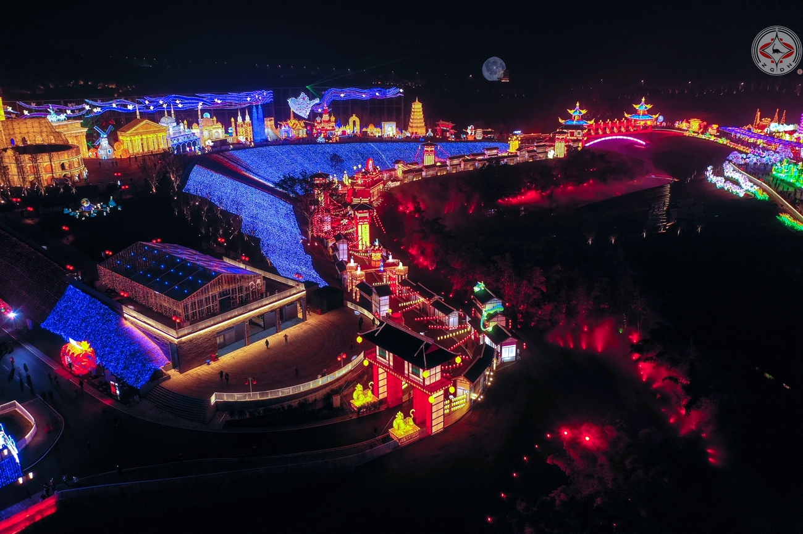
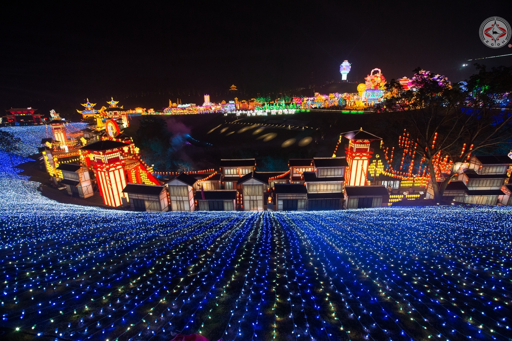
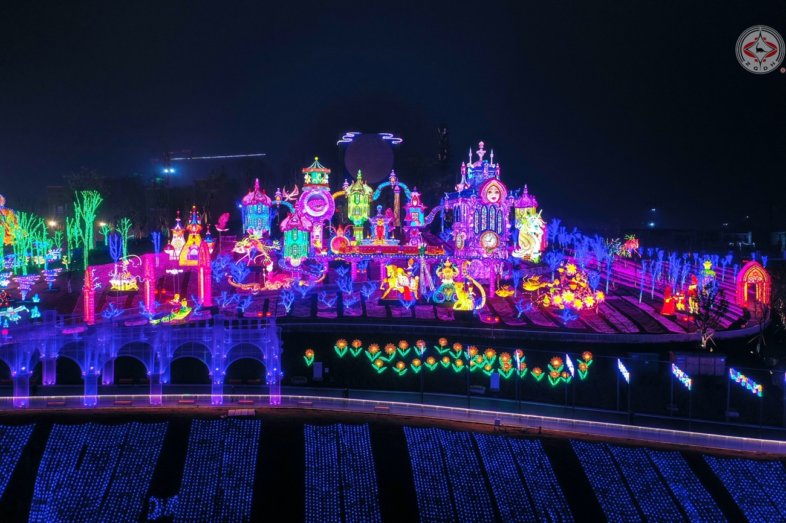
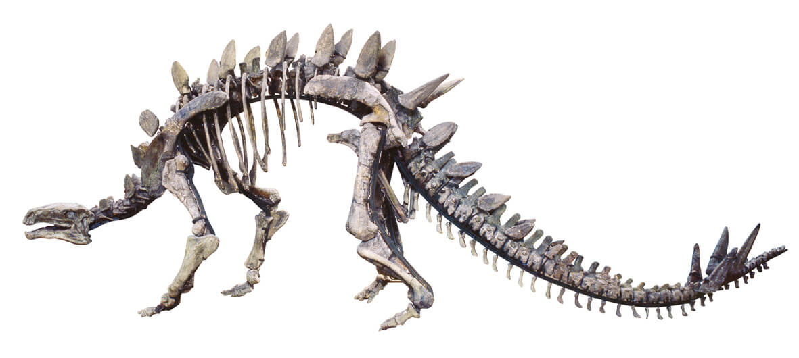
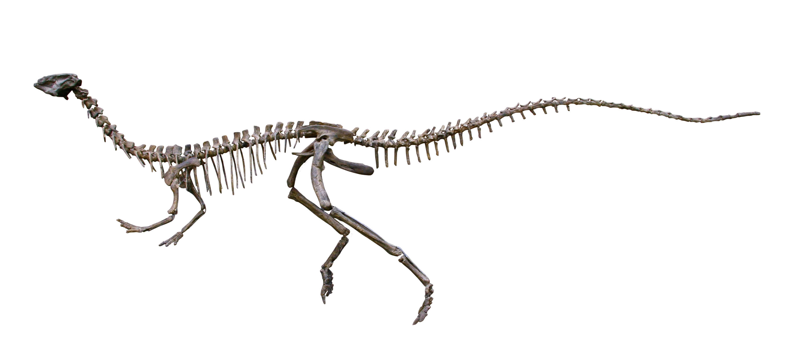
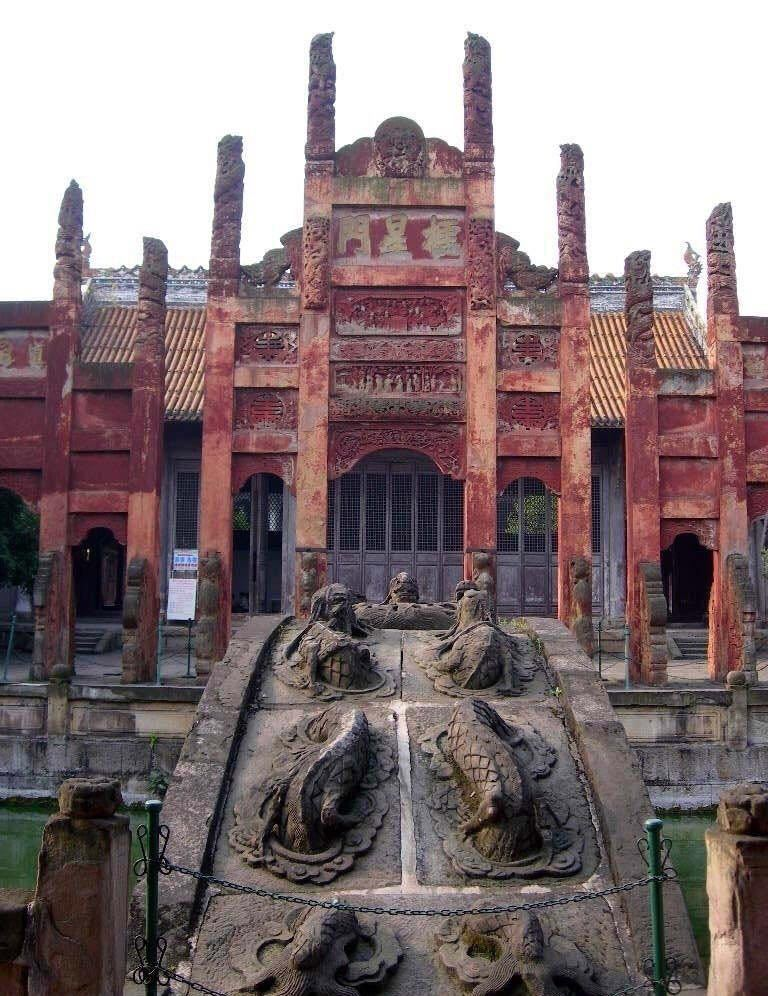
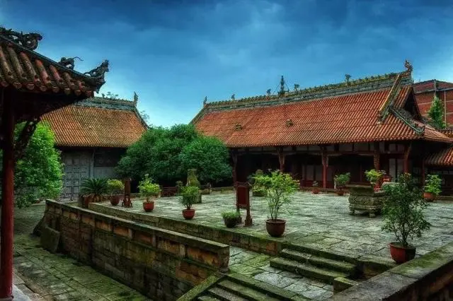
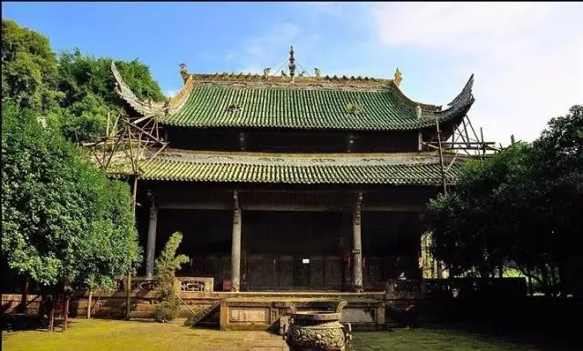

我的家乡
火边子牛肉
富顺豆花
冷吃兔
鲜锅兔
自贡灯会
自贡恐龙博物馆
富顺县，隶属四川省自贡市，地处四川盆地南沿、沱江下游，介于东经104°40′—105°15′、北纬28°55′—29°28′之间， [1] 全县总面积1342平方公里。 [2] [30] 富顺县气候温和，属亚热带湿润季风气候类型地区，雨量充沛、光照较充足、无霜期长，四季分明。 [3] 截至2019年，富顺县辖3个街道、16个镇、1个乡， [3-4] 县政府驻富世街道。 [2] [5-6] 根据第七次人口普查数据，截至2020年11月1日零时，富顺县常住人口为722073人。 [29] 富顺县原为古代江阳县治域，北周天和二年（567年），因盐设县，划出富世盐井及周围地区，设雒原郡及所辖之富世县。太平兴国元年（976）年，因避太宗赵光义之讳，富义监改名为富顺监，富顺县名始由于此。1983年3月，富顺县划归自贡市，成为市辖县。 [7] 境内有内（江）宜（宾）、成自泸赤、自隆高速公路，内（江）昆（明）铁路，以及省道遂（宁）筠（连）路、泸（州）盐（源）路、隆（昌）雅（安）路穿境而过；沱江水路可上溯内江、资阳等县市，顺流至泸州入长江。富顺县是“千年古县”、“巴蜀才子之乡”，有“豆花之乡”美誉。富顺县聚集有国家级文物保护单位富顺文庙、省级文物保护单位“戊戌六君子”之一的刘光第墓，有西湖、五府山、钟秀山、千佛寺、回澜塔、天然石佛、福源灏民居等景区景点。
走进自贡灯会
灯会（自贡灯会），四川省自贡市地方传统民俗，国家级非物质文化遗产之一。 [10-12] 早在唐宋年间，自贡地区就有了新年赏灯的习俗，至清代有“狮灯场市”“灯竿节”等活动，到20世纪初，又渐渐形成了节日的提灯会、闹花灯、放天灯与舞龙灯等活动，逐渐发展成集西南地区民风、民俗之大成的灯会。自贡元宵灯彩主要包括工艺灯、座灯、组灯等几种。多表现民间传统、古典名著、神话故事等题材内容，具有大型、群体、联动的特点。 [1] 从1964年到2020年春节，自贡已举办了33届灯会。

自贡恐龙博物馆
自贡恐龙博物馆位于四川省自贡市的东北部，距市中心9公里,在世界著名的“大山铺恐龙化石群遗址”上就地兴建的我国第一座专业恐龙博物馆，世界三大恐龙遗址博物馆之一,博物馆占地面积7万多平方米，主展馆建筑面积为6600平方米，陈列展示面积4600平方米，馆藏化石标本几乎囊括了距今2.01-1.45亿年前侏罗纪时期所有已知恐龙种类,是目前世界上收藏和展示侏罗纪恐龙化石最多的地方

富顺文庙
富顺文庙自北周武帝天和二年建县至北宋初年（567-960）的近400年间，由于地处边陲，僚汉杂居，盐业虽盛而文风未开。宋仁宗景佑三年（1036），朝廷选派太常博士名学者周延俊来富顺任知监，努力兴教化，办学校，培育士子。在他任职的第六年，即庆历二年（1042），富顺县终于出了第一个进士－李冕，全县士民无不欢欣庆幸。在周延俊的倡导下，人们集资于庆历四年（1044），在县城中心的南门，建成一座文庙，主供孔子，时称＂文宣网庙＂。并在庙内立石质＂雁塔碑＂，以刻全县历次中试者的名字。此后，历任富顺知监，均热心教育事业，亲任儒学教授，常在从政之余，来庙内为生员讲课。
